Map Author: SwarmOfBears
Origin: Map Link
Versions: MC = 1.20.4 - Map = Beta
Presentation
Stranded is a full length CTM map. It’s the sequel to Sun Guardian, you don’t need a DNA test to know who made this map.
Overview
1 - Old Town
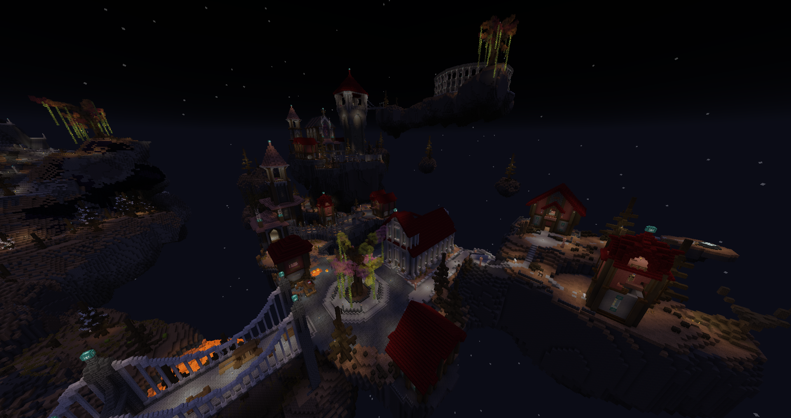
A pretty solid start, I liked the cameo of the starting area being a snippet from Sun Guardian. Compared to it, the beginning experience feels more mastered, it didn’t have the same growing pains and directly sent you on the adventure. There’s a lot of loot and the common chests like before have some strange items, and while there’s still some tight management early on, I’m really glad you’ve given the possibility to have a ton of bundles to alleviate it. There seems to be a good amount of low brow humor in the map, but I’ll admit it made me chuckle at times even with all the memery. The crossbows are back and as good as ever, even if the starting one is fairly weak it’s still significant in battle and quickly became a backbone. Finally, the trademark boss already, fun and challenging battle mechanically, rare are bosses in maps that really make me use all my options.
2 - Die-orite Castle
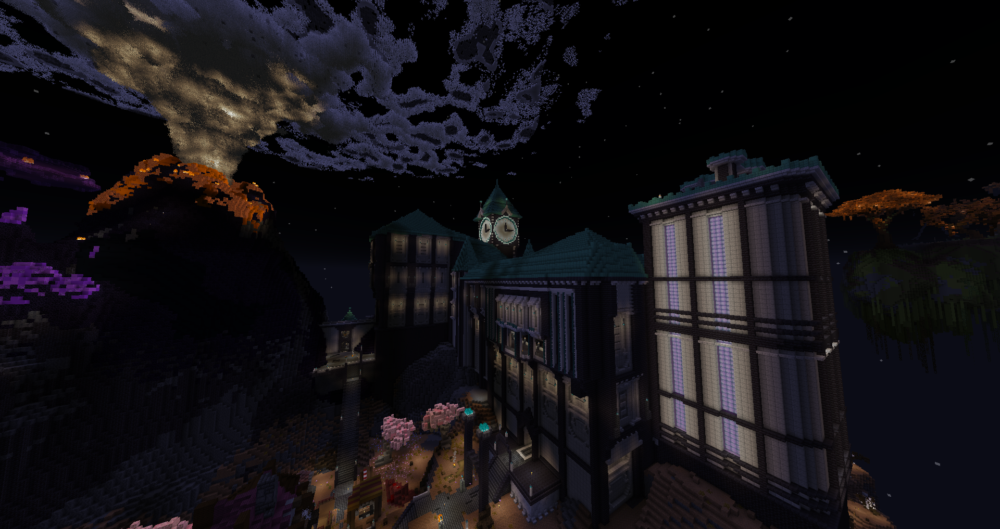
The signature big NPC town is back in full force with some fun interactions to learn info or items, Fus Ro Dah! The castle part got tricky for me since I focused on ranged, I had to make more use of my strong melee items which was fun. The boss is pretty active although playing safe made it less threatening, attempting the challenge is fun to try for a pure battle but because I ended up doing it without switching mainhand(before it was patched) it took me a while longer to complete. I tried to look at the volcano, but since I’ve yet to get the key for the sewers I went back after clearing the spawners, I like how there were setups for things I can only do later or with alternative ways.
3 - Mount Kill-a-Man JarJar
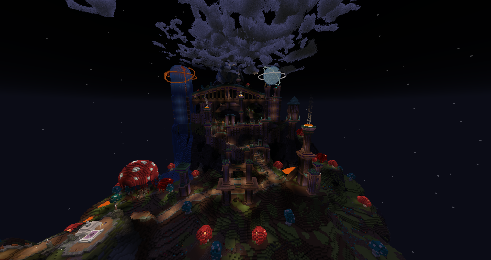
I didn’t expect to see giants work that well as enemies, and they can be pretty dangerous when unchecked. The witch quest was honestly incredible, it had everything, which is pretty funny when it starts off with a boring fetch quest appearance. Speaking of, this is when the new mob range has really started to be felt, making baby zombies three times more nightmarish, using ranged is almost mandatory to avoid grinding down your resources. I’m focusing on the crackshot crossbow and it’s still quite good! The boss was menacing, but thankfully I specialize in running away. This also where the first golf course is located, and wow, just wow! I’ve been blown away at how well made it was, and there’s a real learning curve to win, combat is child’s play compared to it. It took me 4 tries to win the course, and I’ll have to come back to it later for a better score.
4 - Ascension Temple
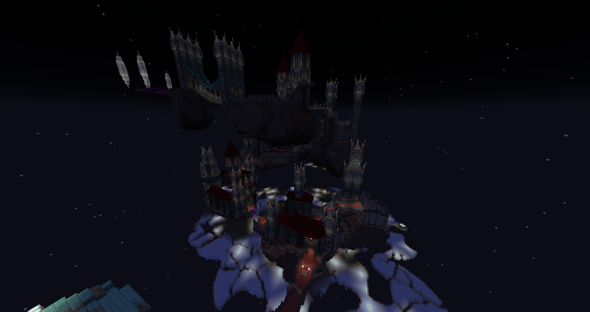
Many people hate having puzzles in CTM maps, I welcome them, and having a full area about it is a nice change of pace from the intense action, with only very light battles throughout. It mixes in some light platforming as well, due to its nature and being full adventure with no nat spawns, it feels a bit shorter, but in terms of size of content it’s equivalent to a normal area. And then the boss goes hard, and then the challenge goes real hard! I was lucky to be somewhat unaffected due to my nudist offhand build, but that didn’t make the fight that much easier, really needing to master it.
5 - Hallowed Bridge City
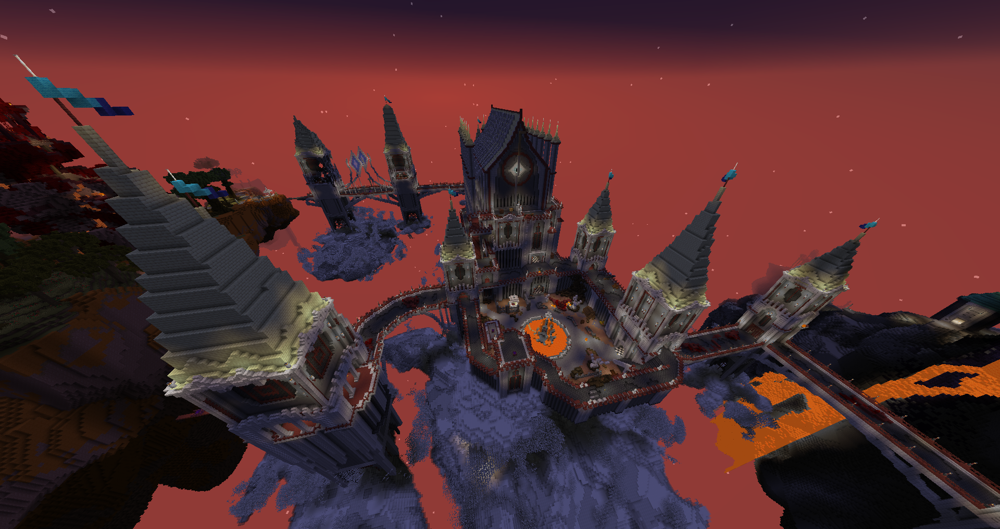
I like the theme of having what’s usually a transition be a full fledged fortress, and unlike the previous areas where it’s more linear you can easily get lost here. Like always I love the layout making use of death snipers hounding you, and the eye monsters have an interesting dynamic different from standard projectiles. A small criticism could be said about the colored keys and locked gate to the boss, where they feel a bit too generic and only justified from a gameplay standpoint. Said boss going full predator on you, even while not a shield user I was glad to have a mainhand shield to cower during segments, and then the challenge was incredibly rewarding with the full auto machine gun - I hunt the predator now! Most of the previous side content being cleared, past this leads to a new chapter, a great gateway was conquered.
6 - The Battle For Fort Crimson
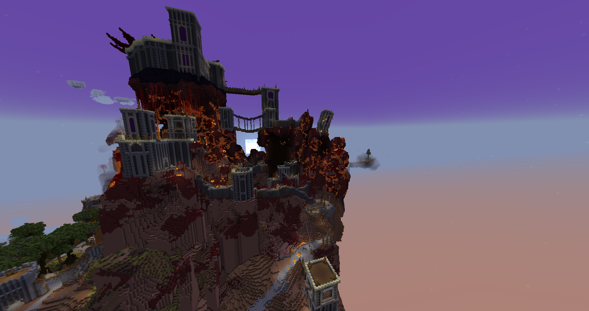
There’s a sizeable subarea acting as the intersection between, with some questing and great trades making me spend stockpiled resources. The name of the area is definitively deserved, what if instead of having the player fight a war, it’s a three-way conflict? It’s pretty fun having mobs of enemies ganging around, with cannons defending various parts of the fort. The long range ghast spawners are a real threat and being a good marksman is a saving grace to destroy from a distance. I’m starting to have a large stockpile of potions so I juiced up to defeat the boss cleanly despite the fight being quite close-quarter, with a cool finish using the devastator machinegun. Finally the spectral eye is obtained!
-8 - Inverted Palace
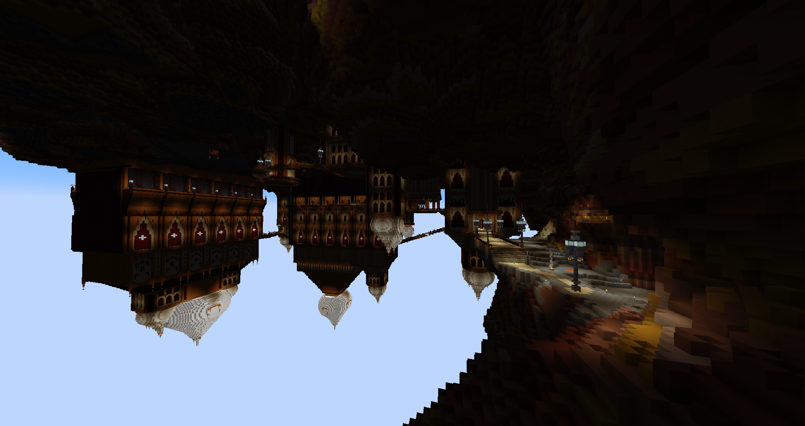
The outside town part was a blast to play, it gave me vibes of old arcade shooters with my trusty crackshot. The ghast towers were pretty terrifying and I spent fire scrolls on their spawners. The sidequest was entertaining and wow that custom head what a reward, everything I could hope for! Things took a turn when entering said palace however, everything was very deadly and even my powerful ranged build struggled to survive. It’s also where I really felt the death system outside of bosses, dying while deep in the dungeon is very painful when nats hunt you down and anything kills you in a few hits only. I won’t go on a long rant again about not having a death system closer to keep inventory, you know the song, I could feel it clearly when my many death runs led to tragedy - if you bring items, which is near required due to the danger, you will have to handle complicated inventory management on the fly to reequip armor. This led me to have to empty one slot and quickly equip each piece until I reached the head slot… and placed it. I might or might not be considering opening a death toll syndicate. On the other hand, the boss was great fun, forcing me to take risks when my arrows became useless, and once again the challenge was perfect for my build! What a rollercoaster this area was, and the crewmate I saved gives access to an even better helmet!
8 - Robo Industries
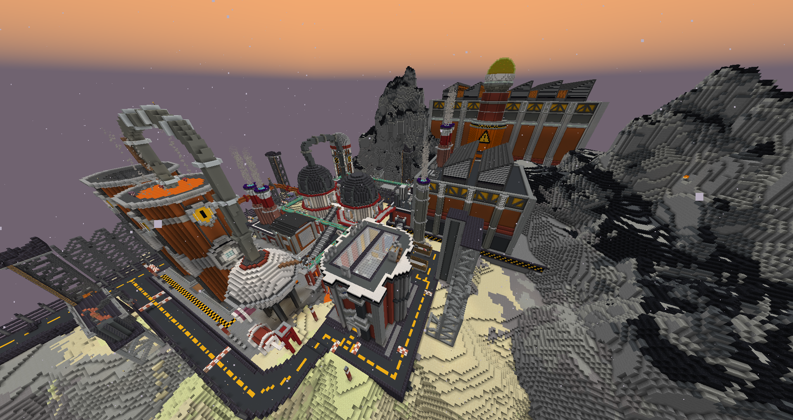
The combat doesn’t let up, this time with more death snipers above. However it felt more fair and pretty fun, and then the latter half is another fun puzzling section - I needed that. I don’t have a lot to say on this area now that I look back, it was a good one and the boss is funny - gotta love goliath battles. As a sidenote, I enjoyed how potions had use, like fire res to negate some of the attacks. And amazing, finally the cog trade at home base.
9 - Ancient Valley
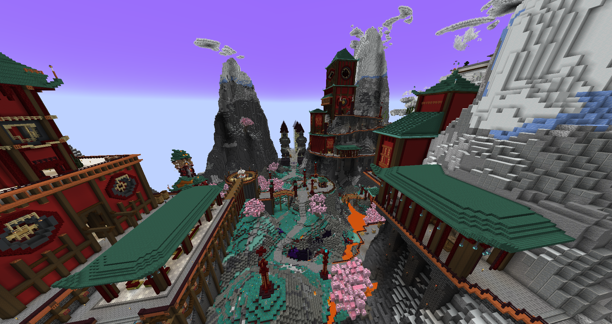
Loving the way the keys were integrated here, I got spooked by the boss early on and it pushed me to use different strategies, going full melee and relying on the spectral eye a lot more to get out of the muck. The area overall was dangerous (although blame partly on me for doing silly no armor build) yet looked quite pretty, some rooms like to pile up mobs with the spawners so I needed to power through fast! Then I remembered there was a second boss waiting at the end, and what a surprise it was: tight boat race on the ropes. I kinda suck at boat movement, especially on ice, and often fell into the void at first. I did manage to pick up on some moves and won, even though I prefer golf by a mile(using the driver) I still enjoyed the different gameplay given outside of pure combat. Now I got enough to get the legendary longshot, my beloved baby is back home.
10 - New Duff City
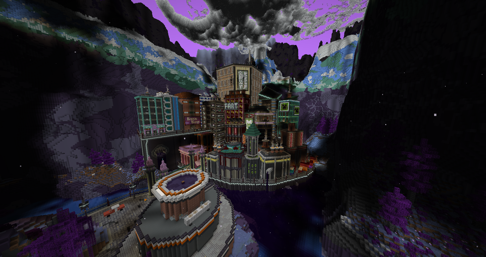
It’s a really massive area, with several subsections acting as mini areas. The build up leading to the city makes the reveal that much stronger, and damn those bombers are terrifying. The layout was a really good impression of chaotic city streets and being hunted from above. It was a difficult area but not too unfair, only asterisk being dropping your items in unclaimed streets while falling from the roof makes it specially hard to gather the gear back - but at this point it’s just part of my usual rant on death systems. The boss is something else, it’s where the map brings out the sekiro, my no armor build gets folded in thousand cranes - clearly I have to change strategies. Past the initial wall crash, the boss is actually really fun and it kinda makes me sad that minecraft jank combat holds back the map from its best designs.
11 - River Styx
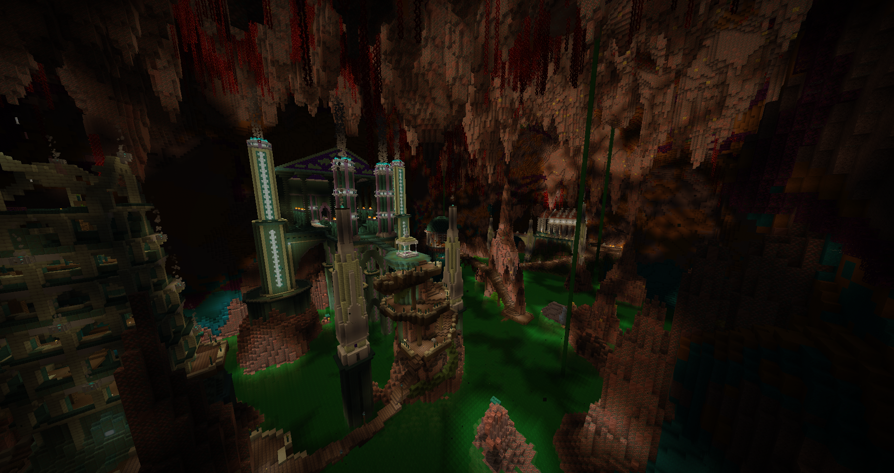
The nat spawns are getting a big boost now, and I like the alt mode mobs making you push and pull depending on the situation. Combat is becoming more dangerous, but since I just changed build and am now full of armor I feel stronger than ever. The cliché old man guide being only a sidequest telling you the main quest doesn’t matter was quite funny, and the Wither rematch scared me at first but having armor made it a lot more doable - the fight was good, yay a good wither fight in my ctm, that’s rare. We’re this late in the map, and we’re still served large chunks of non combat platform puzzling, I love this. I juiced up for the boss and was able to win on the first try, the incredible sword reward from the wither battle really helping me here. It looks clear that the map is going to throw all it has at me for the final areas, I better prepare well but first I have a golf course to par!
12 - Dragon’s Domain
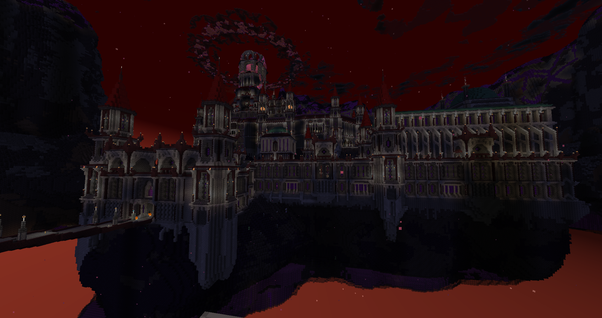
The end is getting near, the map is bringing the big guns and sends out a gorgeously gigantic area in three parts. Everything is deadly now, and using all that’s available will be necessary to come out at the end. Each part felt significantly different in layout, with the inner part really labyrinthic to explore. Using fireballs to clear out some spawners becomes almost a requirement to lessen the pressure in choke points. The combat being so intense, it’s also where your gear would all have mending or unbreakable which made it clear how better it allows the gameplay to feel by not having this annoyance to deal with. The boss was a similar experience to the The Janitor, I got folded hard like toilet paper after wipe, so once again I had to rework my low armor build and make use of the best defensive gear available. Past that hurdle, it still felt really chaotic at some points and likely why it was fixed since. After having enough time to learn the moves, the fight was really fun and a great showcase of the new boltshot!
13 - God King’s Sanctuary
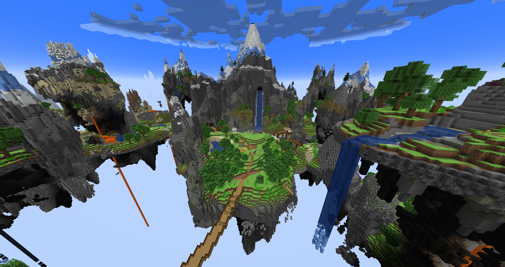
It begins with a simple victory road, a literal spawner trail but with danger abound, after that bit of fun the standard ctm gameplay is over for this map - it was clear the previous area had taken all of it and I appreciate the final area not giving any new gear, more people should do that. The sanctuary was a pleasant surprise, a neat callback as well, and I love to see some extra golf to do! The giants were really overkill at first, until I figured out I should rush them and the spawners quickly due to the long attack cooldown they have. Then the trivia quiz was another nice touch to close the experience… whoops, now it’s final boss time! And what a finale that was, honestly I’ve seen a good lot but this one might just have become my favorite of all maps - the perfect culmination of chaos and devastation with heavy metal playing while giving everything you have to it.
Conclusion
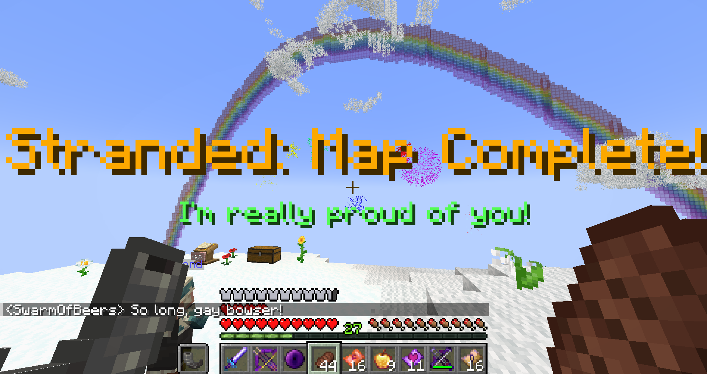
What a return, Sun Guardian shed near all of the issues I had with it, keeping only an incredibly good adventure. Things like wanting bundles, a more interactive main hub, fixed wither fight, NPC involvement, and more, it’s all addressed!
I always appreciate good completion info(with some endgame hints even though it wasn’t needed for me) and the side content was incredible this time, the quests had choice and the dialogues made you care for the NPCs meanwhile the silly options were fun to revel in chaos. I wonder if in the future, the speech checks could be done with a deeper mechanic, like having to find the right luxury thr NPC likes to validate the check. The golf AAAAAAAAAAAAAAH, it’s so good I can’t believe this map made me like golf, something was awakened, golf is within me until death.
The balance of items and supplies is a lot better with much less early starving, bundle crafting is way too good and we need more bundles in maps as a whole along with custom items that have stacking(in the recent versions) for bundle storage. The mechanical crossbows (and magic scrolls) were as good as before, I ended with 3 in the hotbar again. But that’s not all, there were even more cool items to play with like the bucklers and two-handed weapon arts, and once again they were passed on the mobs meaning you got to fight with and against a lot of cool skills. All these strong tools helped offset the new melee mob range and kept things fun!
The bosses tend to be a highlight and wow they delivered again, with banger musics for each, the finale was pure insanity the kind of stuff AAA games make in cinematic battles except here you’re playing it from A to Z with all your kit. Boss battles making your armor unbreakable is honestly one of the best ways to deal with durability being a bad mechanic aside just having unbreakable gear - we need more of this, also maps consider making all gear unbreakable, durability doesn’t bring much if it’s not a scarcity survival map. The challenge notes were a fun way to replay some battles and get cool stuff.
One thing that could deter is the good amount of dubious jokes but I’d say you get used to the potty humor fairly quickly, and the Funny™ made me laugh. But don’t get misled by the front store, for the rest the map goes hard and serious business. The areas all were interesting in their own way, and unlike Elden Ring the endgame was not rushed if anything it’s the opposite. Also one of the rare mapmaker to dare add puzzle parkour and unorthodox gameplay segments as part of the experience, yes please!
In my very subjective opinion, this map is one of the best I ever played, and par for the course the best of this year. Which is a tall order considering some incredible ones that came out then.
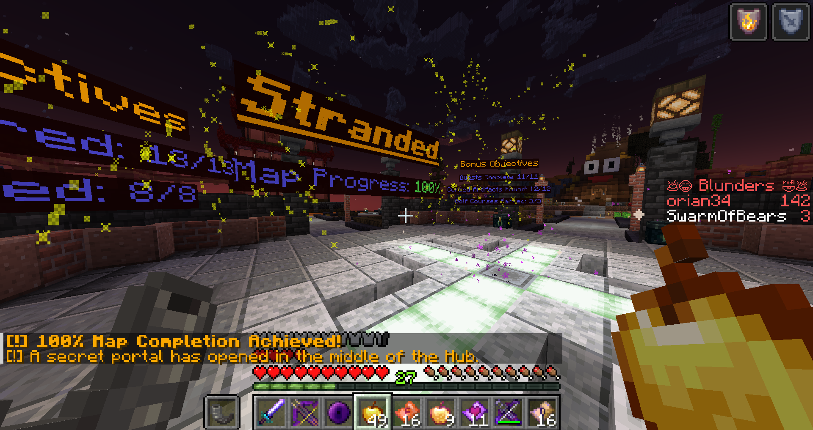